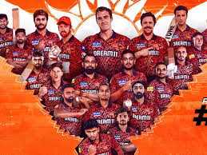

Sunrisers Hyderabad
2016 winners with a strong bowling attack
About Sunrisers Hyderabad

City: Hyderabad, Telangana
Home Ground: Rajiv Gandhi International Cricket Stadium
Captain (2025): Pat Cummins
Owners: Sun Group
Established: 2008 (as Deccan Chargers, rebranded in 2013)
SRH, the “Orange Army,” is known for its potent bowling and dramatic turnarounds, reaching the 2024 final under Pat Cummins.
Records and Achievements
IPL Titles
1 (2016)
Playoff Appearances
7
Notable Record
Highest innings total in IPL: 287 vs RCB (2024)
Key Player Stat
Pat Cummins: Led SRH to 2024 final
2024 Highlight
Runners-up in IPL 2024, lost to KKR in the final.